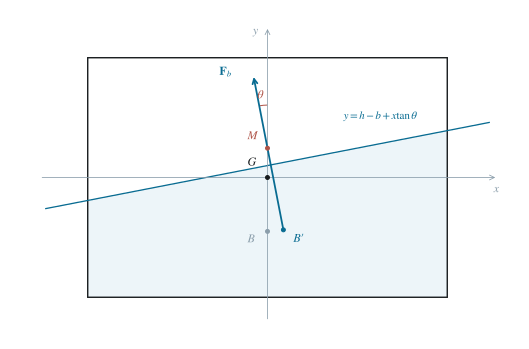
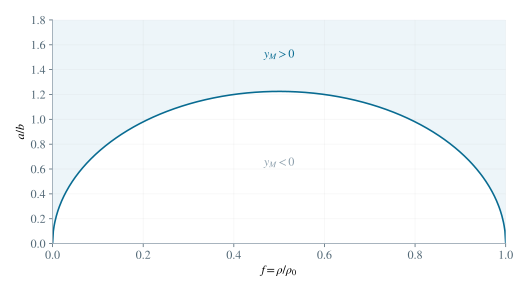

2.1 用阿基米德原理确定浸深与浮心
木块质量为 m=4abℓρ，排液体积为 2ahℓ。平衡条件给出
ρ0g(2ahℓ)=ρg(4abℓ),h=2bρ0ρ. （1）浸没截面是下边界 y=−b、上边界 y=h−b 的矩形，其几何中心为
xB=0,yB=−b+2h,BG=b−2h=b(1−ρ0ρ). （2）因为 0<ρ/ρ0<1，所以 0<h<2b 且浮心在重心下方。浮心低于重心本身并不能判定不稳定，还须计算倾斜时浮心的横向移动。
2.2 由排液面积不变确定液面方程
木块顺时针转动 θ 后，实验室竖直坐标与随体坐标的关系为 Y=YG−xsinθ+ycosθ。水平液面因此在随体系中写成 y=c+xtanθ。在顶、底均未穿越液面的前提下，排液截面积为
A=∫−aa(b+c+xtanθ)dx=2a(b+c). （3）浮力仍等于重力，意味着排液面积仍为 2ah，故 c=h−b。于是
y=h−b+xtanθ≃h−b+xθ. （4）这一截面构型要求 a∣tanθ∣<min(h,2b−h)，确保液面只与两侧边相交；这是进行以下积分时的几何适用条件。
2.3 逐条积分求新浮心
取位置 x 处宽为 dx 的竖条，其浸没高度为 H(x)=h+xtanθ。因此对 x 的一阶矩为
xB′=2ah1∫−aaxH(x)dx=2ahtanθ∫−aax2dx=3ha2tanθ. （5）竖条从 −b 延伸到 −b+H(x)，其中心是两端平均值 −b+H(x)/2。其纵向面积矩为 [−b+H/2]Hdx。展开 H=h+xtanθ，被积式为 −bh+h2/2+(h−b)xtanθ+x2tan2θ/2。对称区间使中间奇次项消失，常数项积分为 2a(−bh+h2/2)，二次项积分为 a3tan2θ/3。除以面积 2ah，得到
yB′=2ah1∫−aa[−b+2H(x)]H(x)dx=−b+2h+6ha2tan2θ. （6）在最后一步，含 x 的奇函数项积分为零，而 ∫−aax2dx=2a3/3。保留小角的一阶项，得到
xB′=3ha2θ+O(θ3),yB′=−b+2h+O(θ2). （7）新浮心向下沉的一侧移动，而纵坐标的一阶变化为零。这一横移产生了可能的回复力矩。

图 2. 随体坐标中的浸没梯形、浮心 B′ 与稳心 M。液面和浮力作用线互相垂直，横纵坐标比例相同。
2.4 求稳心高度，给出稳定条件
实验室竖直向上的单位矢量在随体系中为 (−sinθ,cosθ)。过浮心的竖线可写为 (x,y)=(xB′,yB′)+s(−sinθ,cosθ)。与随体 y 轴相交时 0=xB′−ssinθ，因此 s=xB′/sinθ。把它代入纵坐标，得到
yM=yB′+xB′cotθ. （8）将浮心坐标代入并取 θ→0，得到稳心的极限位置：
BM=3ha2,yM=3ha2−b+2h. （9）令密度比 f=ρ/ρ0，则 h=2bf。稳心高度为 yM=a2/(6bf)−b+bf。倾斜产生回复力矩要求 yM>0；乘正数 6bf 得 a2>6b2f(1−f)，再除以 b2，即
(ba)2>6f(1−f),f=ρ0ρ. （10）若严格反向不等式成立，则小倾角具有倾覆趋势。等号对应线性回复力消失，不能仅靠一阶方程判定非线性稳定性。

图 3. 参数平面中的线性稳定区域。曲线上方稳心高于重心，曲线下方线性不稳定；曲线本身是临界情况。
2.5 绕重心写转动方程
关于木块纵向中心轴的转动惯量为
J=12m[(2a)2+(2b)2]=3m(a2+b2). （11）浮力大小近似为 mg，作用线经过稳心；相对于重心的回复力臂为 yMsinθ。以顺时针为正，角动量定理给出
Jθ¨=−mgyMsinθ≃−mgyMθ. （12）当 yM>0 时，这就是简谐振动方程，故
ωθ=a2+b23gyM. （13）当 yM→0+ 时，ωθ→0，对应小振动周期趋于无穷大、回复变慢。在临界点本身，线性简谐近似退化，需要考察更高阶力矩。稳心是浮力作用线的几何交点，不是机械转轴；不能直接把绕稳心的转动惯量当作固定轴转动惯量。
2.6 竖直振动与两种频率的比较
令质心竖直位移为 ζ，向上为正，且只发生竖直平动。此时浸深为 h−ζ，浮力与重力之差为
FY=2aℓρ0g(h−ζ)−mg=−2aℓρ0gζ. （14）再用 m=2ahℓρ0，可得
ζ¨+hgζ=0,ωv=hg. （15）在转动稳定的条件下，两种频率均为正。它们的平方之比为
ωv2ωθ2=a2+b23hyM=(a/b)2+1(a/b)2−6f(1−f). （16）稳定条件使分子大于零；由于 0<f<1，分母减分子为 1+6f(1−f)>0。因此
0<ωθ<ωv. （17）